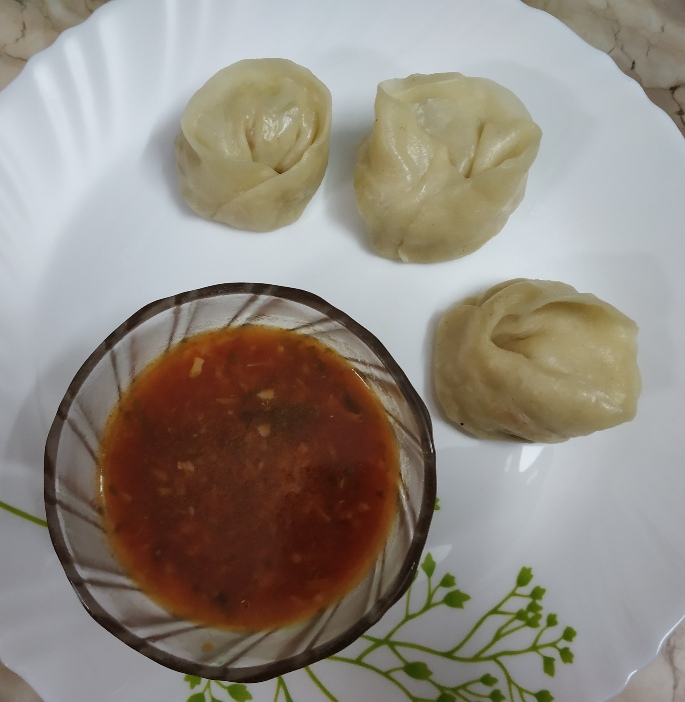

VEG MOMOS
In frame is Veg momos or dim sum are steamed dumplings stuffed with a lightly spiced vegetable filling.
A popular tibetan recipe and also a popular North Indian street food.
INGREDIENTS :
chopped carrot,cabbage and capsicum
3 cups maida
1 tablespoon ginger & garlic paste
1/2 spoon vinegar and soy sauce
any refined oil
1 tomatoe,1 tablespoon chilli flakes
STEPS ONE CAN FOLLOW(if needed) :
First take a pan and heat oil, then add ginger garlic paste and cook , then add all chopped veggies and cook well
Then let the stuffing cool down and start making the dough
Then add salt, oil to the maida and make a dough and keep for 30 minutes aside
Then start giving shapes to the momos and meanwhile set the water in the steamer to boil,then steam
the momos for 5-6 minutes and can serve it hot with red chilli chutney